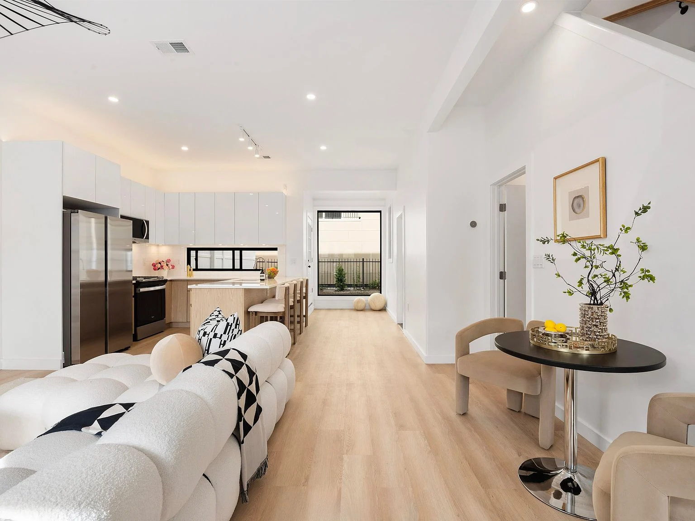
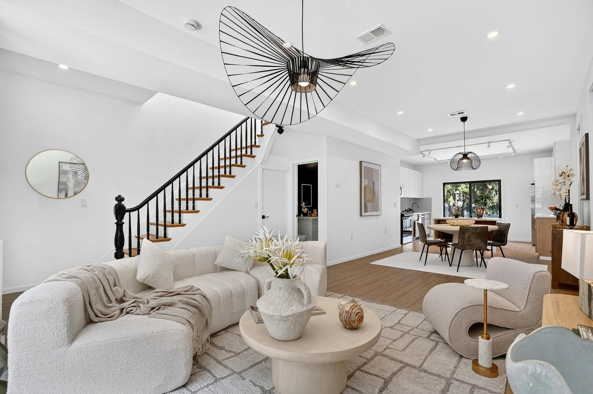

Design & condition
Consider the layout, building systems and opportunities to improve function. Understand existing conditions and the practical scope of renovation before shaping a plan.
SEE THE POTENTIAL. A considered approach to the potential of existing properties.
REIMAGINE THE SPACE. Vacant properties. Substantial renovation. Room to rethink.
BUILD ENDURING VALUE. Thoughtful improvements. Aligned partnerships. A longer view.
ARCHITECTURAL CONCEPT · NOT A PORTFOLIO PROPERTY
Understand our collaboration process, prepare partnership documents and coordinate specific projects in an invitation-only workspace.
01 / OUR PHILOSOPHY
Lensho Capital focuses on residential and commercial property acquisitions and renovation. We seek vacant buildings and properties requiring substantial work, with a clear plan for improvement.
Our name is inspired by 连胜 — a succession of wins. To us, it represents the discipline of making thoughtful decisions, building lasting relationships and moving forward together.
LIÁN SHÈNG
A shared path forward02 / OUR INVESTMENT FOCUS
Our current search focuses on New Jersey near New York City, prioritizing vacant properties and buildings requiring substantial renovation.
Current priority markets
WHAT WE CONSIDER
Consider the layout, building systems and opportunities to improve function. Understand existing conditions and the practical scope of renovation before shaping a plan.
Evaluate acquisition cost, renovation scope, financing, carrying costs and reserves together. Consider approvals, construction timing and local demand when testing feasibility.
Discuss capital contributions, operating responsibilities and decision-making before moving forward. Establish a shared understanding of the holding period and possible exit paths.
03 / SELECTED RENOVATION EXPERIENCE
Selected residential renovations from the principal’s prior project experience, showing how space, light and materials inform our approach.

An open living and kitchen arrangement, pale wood tones and a restrained palette keep the living spaces connected and bright.
Open living · Natural light · A restrained palette

Warm wood, black accents and a connected living and dining area give the interior a consistent character.
Connected rooms · Warm materials · Considered details
04 / PARTNERSHIPS
We are building relationships with property owners, operating partners and investors who share a considered approach to real estate.
For owners & intermediaries
We welcome introductions to vacant properties and buildings needing major renovation in our priority markets.
A useful starting point: location, occupancy, known repair needs, property photos and expected transaction timing.
For prospective investment partners
Consider bringing investors together around an identified property, with participation subject to project terms and eligibility.
Discussion begins with the asset, capital requirements, ownership structure and investment horizon.
For operating & capital partners
Explore partnerships that combine capital, local knowledge and the ability to execute a property strategy.
Clarify each partner’s contribution, operating responsibilities and decision-making process.
05 / START A CONVERSATION
Have a property or a partnership in mind? Share a short introduction with Lensho Capital.
lenshocapitalllc@gmail.com
An address or general location, property type and vacancy or occupancy status. Photos and a brief description of known repair needs are particularly useful.
An estimated project size and what that amount covers. An asking price, current occupancy and expected timing are helpful if known.
Your relationship to the property, or the capital, local knowledge or operating experience you would bring to a partnership.